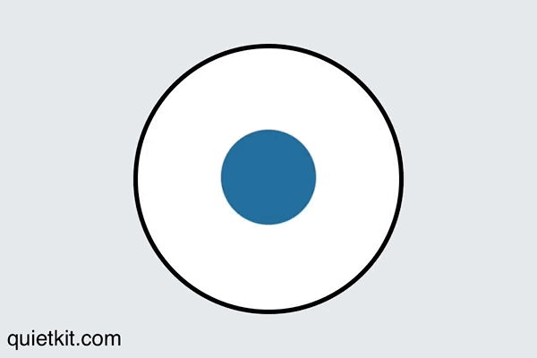

Improving - Outside the Game
Instead of spending all your time looking for ways to improve within CS:GO, there are some easy ways outside the game to improve your performance that we will explore on this page.
Mindset
Improving your mindset is one of the things that will have the most impact on your gameplay and learning. Unfortunately it is one of the hardest to focus on when you start to have a bad session, or already having a bad day. Hopefully some of these techniques can help you out.
Breathing
Try implementing box breathing for a way to refocus your attention and calm your mind.
- Start a time for 2 minutes
- Follow the image
- Inhale as the circle expands for a count of 4
- Hold your breath as the circle is at it's maximum for a count of 4
- Exhale as the circle contracts for a count of 4
- Hold your breath as the circle is at it's minimum for a count of 4
- Repeat
Food & Drink
Getting frustrated? Feeling light headed? You might just be hangry. Gaming is an activity that can eat away seemingly endless amounts of time, and there is a good chance that you have missed out on some nutrition in pursuit of better map times. Getting a bite to eat and rehydrating gives your brain the fuel it needs to keep going. It also gives you an opprotunity to get up and move. Speaking of getting up...
Exercise
How long have you been sitting in your chair since you last got up? More than an hour? If so, try getting up now and doing 10 jumping jacks. Getting your heart rate up is beneficial when most of us are sedentary behind a keyboard all day. Besides combatting against conditions like DVT from sitting too much, getting exercise, whether going for a run, or doing some air squats is a great way to feel better.
Stretching
Ugh. Stretching. That's what a lot of people, formerly including myself, used to think. Stretching feels great however, and helps to ward off injuries. There are two kinds of stretching I am talking about, one is your whole body. Try some yoga at your desk to get some relief. The other kind is hand and wrist specific stretching. If you play competitive games or are at your computer long enough, you are almost certainly going to start noticing tight wrists and maybe even soreness pop up. You want to bite that at the head before it becomes something like Carpal Tunnel. Try adding some of these stretches into your gaming breaks, when the server is changing maps is a great time to do so!
Ergonomics
Ergonomics can have a big impact on your performance if you are spending hours a day at your desk. Try these quick tips to improve your set up.
- Try sitting at your desk properly
- Make sure your monitor is placed correctly
- Use Flux! Your eyes will thank you
Computer Settings
There are a number of things you can do in your operating system to improve your experience in game.
- Disable mouse acceleration
- Disable mouse acceleration
- Disable mouse acceleration
- See above